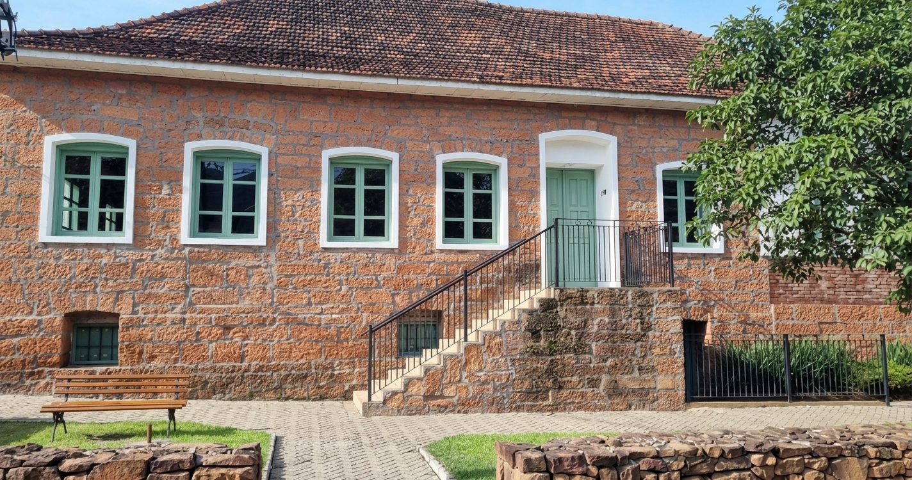
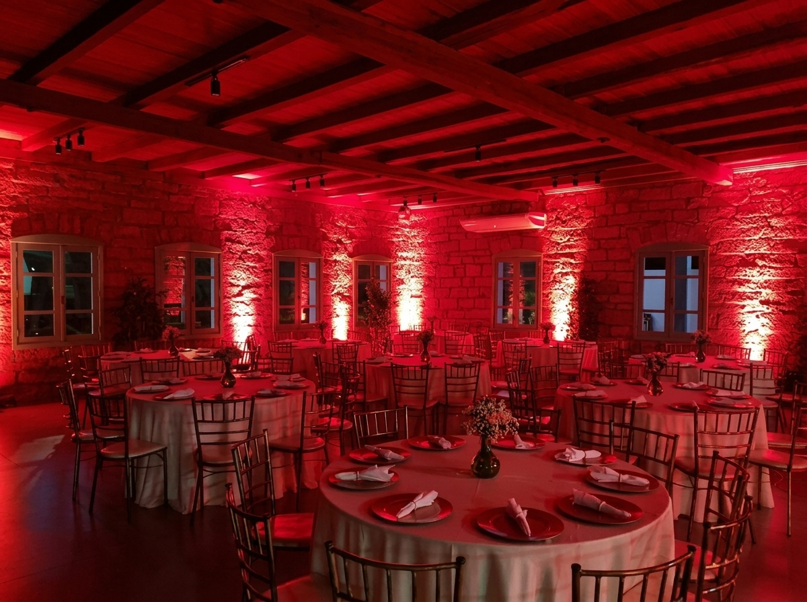
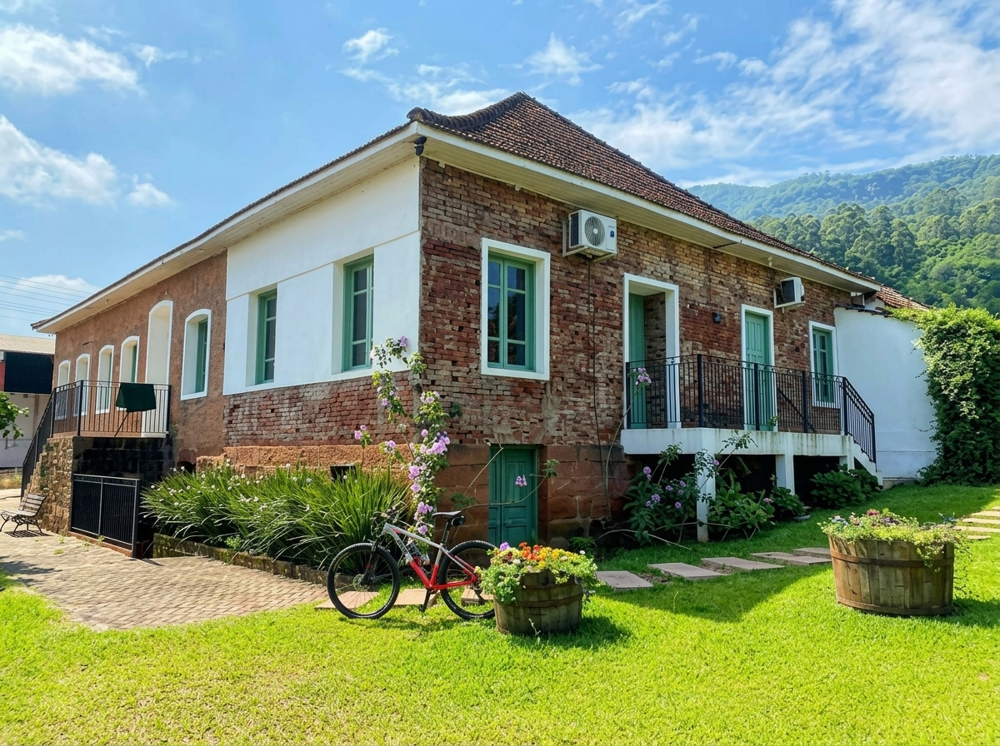
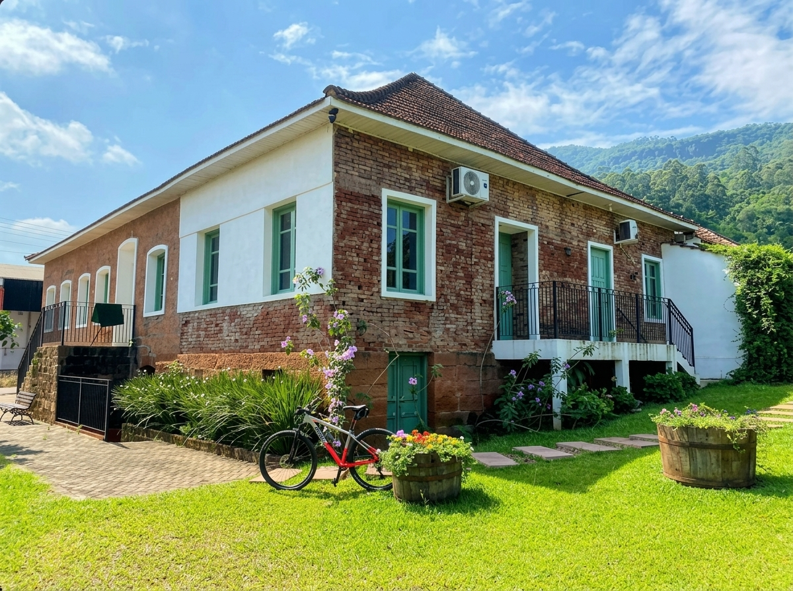
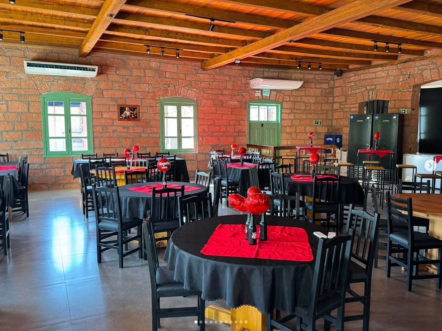
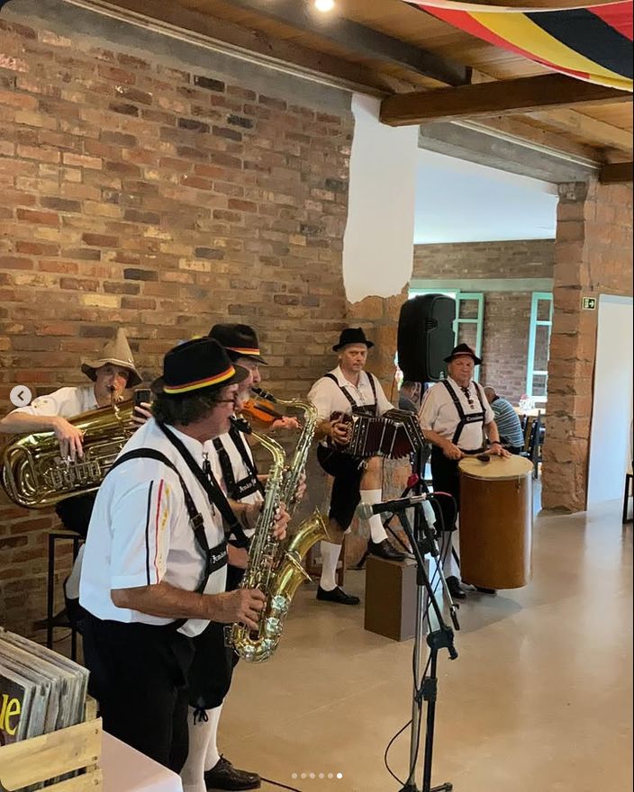

Casamentos
Um cenário cheio de personalidade para celebrar histórias de amor.

Um lugar onde a história encontra novas experiências
Um casarão histórico, cuidadosamente restaurado, onde tradição, charme e sofisticação se encontram para criar experiências únicas.
Construído em 1901, o antigo Salão Porsche faz parte da memória e da história de Imigrante. Entre encontros, bailes, casamentos e celebrações, suas paredes testemunharam gerações de momentos especiais.
Restaurado com cuidado e respeito às suas origens, o casarão preserva suas características arquitetônicas e mantém viva sua essência.
Hoje, a Porsche Haus abre suas portas para novas histórias, unindo o charme do passado às experiências do presente.
Construído com pedra grês extraída da própria localidade.


Da rusticidade à sofisticação, cada detalhe da Porsche Haus carrega personalidade e história. Um ambiente pensado para receber encontros, celebrações e experiências especiais.



Um cenário cheio de personalidade para celebrar histórias de amor.

Celebre a vida em um ambiente que transforma encontros em lembranças.
Encontros especiais em um espaço que combina história e autenticidade.

Experiências únicas em um ambiente com identidade própria.

Entre em contato com a Porsche Haus e converse conosco sobre sua próxima experiência.